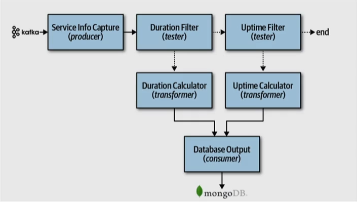

Estilo Baseado em Pipelines
Estilo Baseado em Pipelines
A arquitetura baseada em pipelines é um estilo arquitetural frequentemente utilizado em sistemas que envolvem processamento de dados em lote, transformações sequenciais ou encadeamento de tarefas. Essa arquitetura é projetada para facilitar o envio e processamento de dados por uma série de estágios, onde cada estágio executa uma função específica.
A imagem1 abaixo exemplifica o uso da arquitetura baseada em pipelines e como as pipelines se comunicam2.

Fundamentals of Software Architecture
Entendendo a Arquitetura Baseada em Pipelines:
A arquitetura em pipeline se assemelha a uma linha de montagem em que os dados fluem através de várias etapas de processamento. Cada etapa executa uma tarefa específica e transfere os dados para a próxima etapa até que o processo esteja concluído. Isso permite um processamento eficiente, paralelizado e com divisão de tarefas.
Exemplo de ETL (Extração, Transformação e Carga) de Dados:
A arquitetura baseada em pipelines é amplamente utilizada em sistemas ETL, comumente encontrados em ambientes de análise de dados e business intelligence:
-
Extração (Extraction): Nesta primeira etapa, os dados são extraídos de várias fontes, como bancos de dados, arquivos e serviços web.
-
Transformação (Transformation): Os dados extraídos passam por uma série de transformações, onde são limpos, enriquecidos, agregados e formatados de acordo com as necessidades.
-
Carga (Load): Os dados transformados são carregados em um armazém de dados ou banco de dados de destino, onde podem ser consultados e analisados.
Vantagens da Arquitetura Baseada em Pipelines:
- Paralelismo: As etapas do pipeline podem ser executadas paralelamente, acelerando o processamento de dados.
- Reutilização: Cada estágio da pipeline pode ser reutilizado para processar diferentes conjuntos de dados ou em diferentes partes do sistema.
- Escalabilidade: Novos estágios podem ser adicionados conforme necessário para lidar com maiores volumes de dados ou requisitos de processamento.
Em resumo, a arquitetura baseada em pipelines é uma abordagem eficaz para lidar com processamento de dados em lote, transformações sequenciais e fluxos de trabalho complexos. Ela oferece a flexibilidade necessária para lidar com uma variedade de cenários e é uma boa escolha para sistemas que exigem processamento eficiente e organização de tarefas sequenciais.